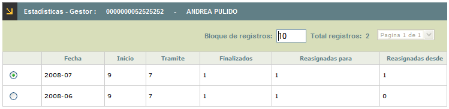

Gestores
Estadísticas: Mediante esta opción, el usuario puede consultar el histórico de los reclamos que ha tramitado o que ha finalizado cada gestor; cuántos de los reclamos que se le han asignado han sido reasignados a otros gestores, o cuántos le han sido reasignados de otros gestores. El sistema permite visualizar los datos junto con su correspondiente gráfica.
El formulario se compone de dos pasos: Información básica y Gráfica.
Información básica: Muestra la información organizada cronológicamente y permite seleccionar el registro para pasar al siguiente formulario. Cuenta con el botón Cancelar para regresar al formulario principal Gestores.

Fecha |
Columna en la cual se despliegan el año y el mes a los cuales corresponden los datos desplegados en los demás campos. |
Inicio |
Número de reclamos con los cuales el gestor comenzó en dicho periodo. |
Trámite |
Número de reclamos tramitados por el gestor en dicho periodo. |
Finalizados |
Número de reclamos finalizados por el gestor en dicho periodo. |
Reasignados para |
Número de reclamos que le habían sido asignados al gestor consultado, pero que por determinada circunstancia, le fueron reasignados posteriormente a otro gestor. |
| Reasignados desde | Número de reclamos que le habían sido asignados a otros gestores, pero que por determinada circunstancia, le fueron reasignados posteriormente al gestor consultado. |